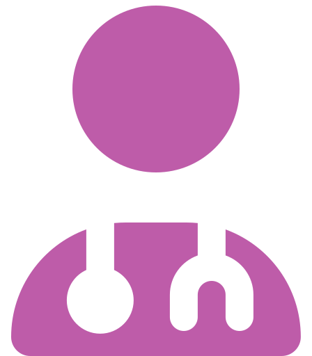
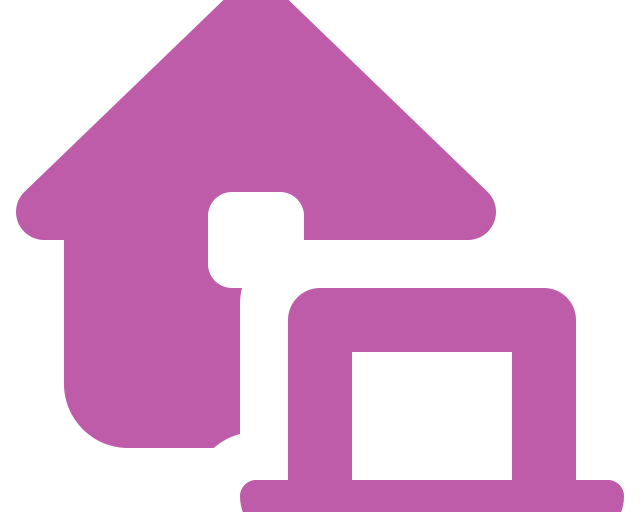

Espacio Ancla · Psychology
A safe space to talk about what you feel.
In-person and online psychological therapy with close, caring support — at your own pace.
Book Your First Session How We Work

100% Confidential 